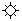
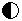

Enhancement
XSane uses a gamma table to do the following enhancement functions. If the scanner supports a custom gamma table (and the option is enabled) XSane uses the scanner internal gamma table with the scanner's maximum bit depth.

Gamma correction: The gamma correction is a non linear correction. Black keeps black and white keeps whiteif the gamma value is greater than 1.0 the gray intensities are brightned
if the gamma value is smaller than 1.0 the gray intensities are darkend Brightness: positive values increase the brightness of the image. All values are increased by the same value. 100% means a shift of the half value range (on 8 bits (256 values) this means a shift of 128). Contrast: positive values increase the contrast of the image. Medium gray keeps medium gray (8 bits: 128)-100% means that all colors become medium gray
+100% means that the difference between a value and medium gray is doubledThreshold:
defines the brightness level in % that is needed to get a white point in lineart (black/white) mode. You have to enter some options in the device setup and the backend needs to make available a threshold option.RGB default:
if RGB default is activated, all values for the color components (red, green and blue) are set to the default values (gamma=1.0, brightness=0%, contrast=0%). If you deactivate it, you can set different enhancement values for each color.Negative: This option inverts the intensities (black <-> white). It is for scanning negatives.Negatives do not only have inverted colors, it also is necessary to do a color correction for each color component because the negatives have very different color ranges for each color.
Autoenhancement: If you press this button XSane tries to set good values for brightness, contrast and gamma correction independance of the selected part in the preview window. This does work quiet well for brightness and contrast, but the gamma correction normally has to be corrected manually.Enhancement default:
If RGB default is disabled, the components for each color are set individually.Sets the enhancement values to default: gamma=1.0, brightness=0%, contrast=0%.Restore enhancement: Restores the enhancement values from preferences.Store enhancement (Memory): tore selected enhancement values to preferences.